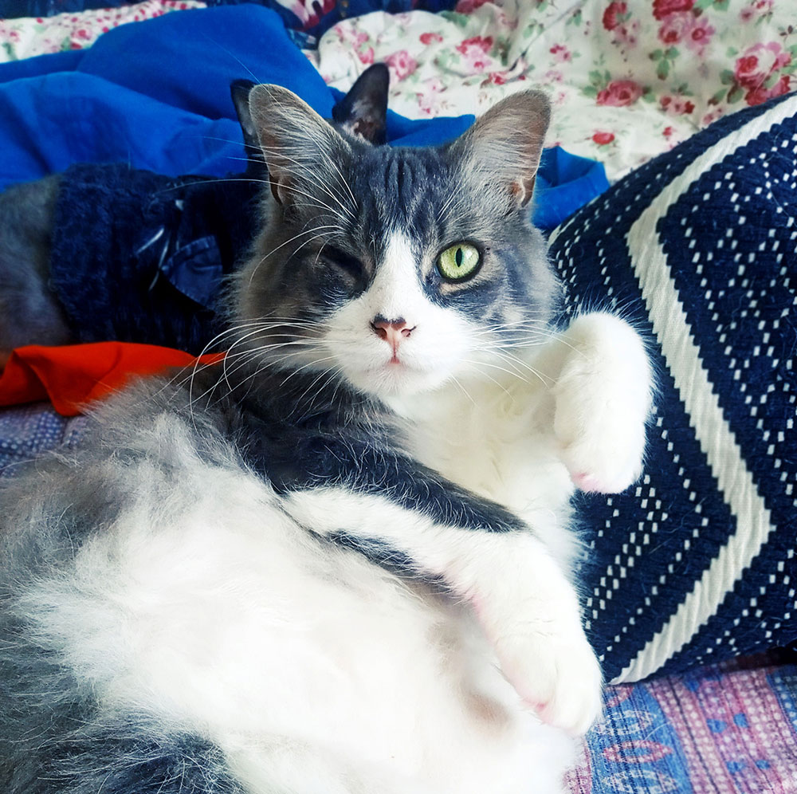

One-Eyed

- Gender: Male
- Breed: Siberian
- Birthday: June 15, 2020
- Personality: Brave and independent
- Favorite food: Chicken fillet
- Funny habit: Brings toys to bed
- Story: Found as a small kitten with an eye injury
- Favorite spot: Windowsill with street view
- Special talent: Can open doors with his paw